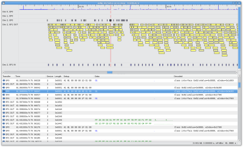

Open source USB debugging, in style.
{kind=link}
The Virtual USB Analyzer is a free and open source tool for visualizing logs of USB packets, from hardware or software USB sniffer tools. As far as we know, it's the world's first tool to provide a graphical visualization along with raw hex dumps and high-level protocol analysis.
The Virtual USB Analyzer is not itself a USB sniffer tool. It is just a user interface for visualizing logs. It currently supports three log formats, but it's designed to be easily extensible. With a couple dozen lines of Python code, you can add support for your favorite log format.
We developed vusb-analyzer at VMware as an efficient way to debug our own USB virtualization stack. We wanted a tool that made it easy to see problems at a glance, and we wanted a way to solve both correctness and performance bugs. As a result, we ended up with what we think is a fairly unique tool. We're excited to have the opportunity now to release this tool as open source software, under the MIT license.
Supported Log Formats
- Logs from Linux's built-in USB sniffer, usbmon.
- Logged USB traffic from debug builds of VMware Fusion, Workstation, or Player. See the tutorial for information on capturing such a log.
- XML logs from the Ellisys USB Explorer 200, a hardware USB 2.0 analyzer.
Features
- Unique graphical timeline view.
- Side-by-side diff mode: visually compare two log files.
- Pluggable log format modules: VMware, Ellisys, usbmon.
- Pluggable protocol decoders: USB Chapter 9, Bluetooth, Storage, Cypress FX2.
- Packet metrics and filtering tools.
- Whole-bus analysis: analyze multiple devices concurrently.
- Written in Python, with a GTK+ user interface.
- Automatic "tail -f" mode: follow log files as they grow.
- Loads large log files in the background. You can start browsing before the whole file is loaded into memory.
- Automatic decompression of gzipped log files.
Contact
This project is provided as-is, with no official support from VMware. However, I will try to answer questions as time permits. If you have questions or you'd like to submit a patch, feel free to email me at: micah at vmware.com